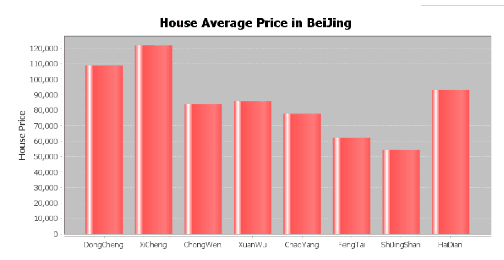

{% load static %}
{{ province }}{{ city }}二手房数据爬取
 {#{% for elem in list %}#}
{# {{ elem }}#}
{#{% endfor %}#}
{#{{ list.1 }}{{ list.2 }}#}
{#{{ list }}#}
{#{{ csvfile }}#}
{#
{#{% for elem in list %}#}
{# {{ elem }}#}
{#{% endfor %}#}
{#{{ list.1 }}{{ list.2 }}#}
{#{{ list }}#}
{#{{ csvfile }}#}
{#
#}
{#{{ list }}#}
列出部分房价：（元/平方米）
{% for val in list %}
{{ val }}
{# {{ val|cut:"元/平" }}#}
{% if forloop.counter|divisibleby:"15" %}
{% endif %}
{% empty %}
当前无房价数据！
{% endfor %}
房价平均值为{{ Ave.0 }}
{#房价总和为{{ sum }}
#}
{#csv test
#}
